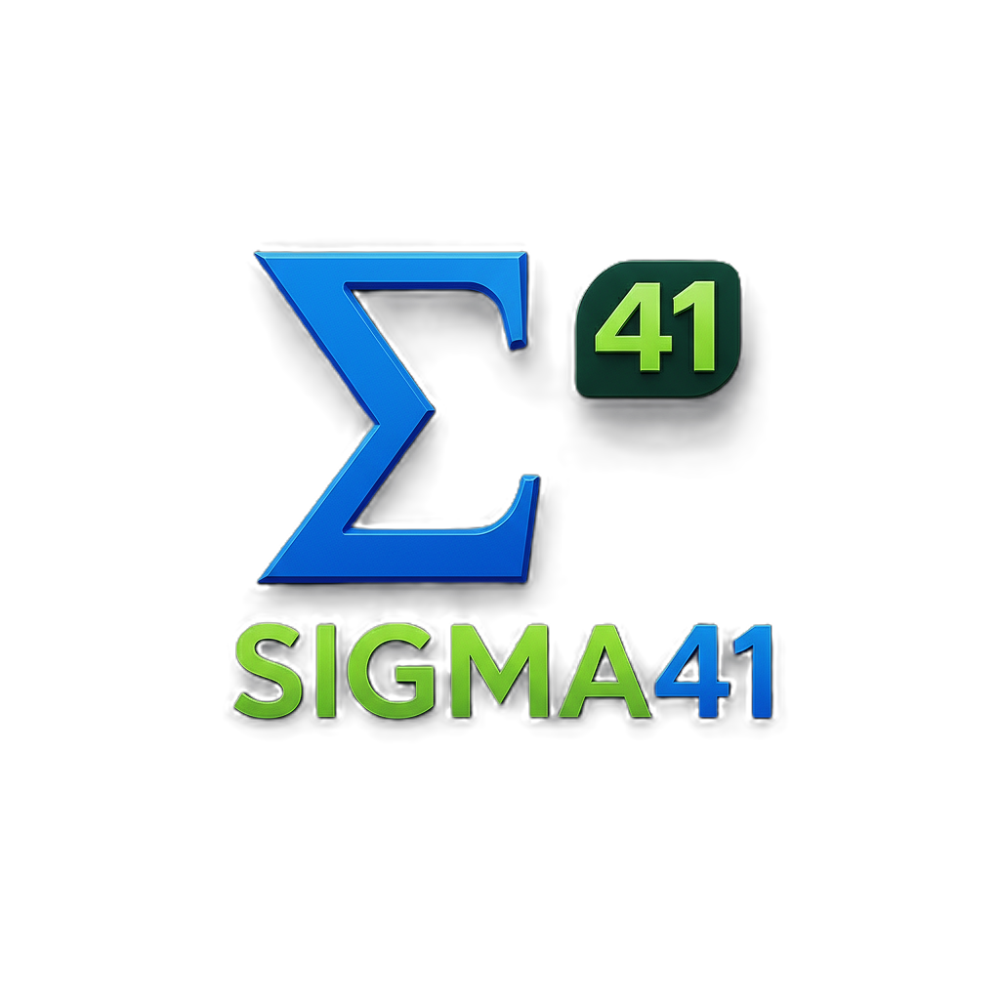

%
Avoid payment lock in
Keep the freedom to negotiate with processors on your terms instead of being tied to a POS vendor's preferred stack.
RestaurantSynk uses AI to assemble a custom POS and management system that your restaurant controls. No forced bundles, no payment lock in, and no long term contracts.

Your vendors are already rolling AI into their existing services because they know restaurants no longer need them for many of those functions. Scheduling, payroll, inventory, ordering, budgeting, payment processing, and gift cards can all be handled in house with the right system.
The problem is that most operators are still locked into expensive bundles that were designed to maximize vendor revenue, not operator flexibility. You end up paying more every month for software, processing, and add-ons you do not truly control.
RestaurantSynk is designed to unbundle the stack, return control to the operator, and keep recurring costs visible.
RestaurantSynk replaces one-size-fits-all POS systems with an operating system built around your SOPs, workflows, and priorities. We configure the tools to fit your restaurant instead of forcing your restaurant to fit the tool.
The result is a system that can run service, back office, prep, ordering, reporting, and operational intelligence in one connected environment, while still leaving ownership with you.
Keep the freedom to negotiate with processors on your terms instead of being tied to a POS vendor's preferred stack.
Stop paying for feature tiers, ancillary services, and software modules that inflate monthly costs over time.
Own menu data, operational reporting, and system configuration without being trapped in a closed platform.
Apply AI to ordering, prep, costing, and operational stability instead of paying for generic features that do not fit your workflow.
RestaurantSynk provides a fully functional POS and back office application that lives in your environment, not ours. You are not leasing access to a closed platform. You control the infrastructure, the data, and the configuration.
The system supports full service and quick service workflows, including order entry, modifiers, seat numbers, check splits, voids, and comps with complete audit visibility.
Reporting is built for daily decisions, not just accounting summaries. Operators can review sales by daypart, analyze menu mix, track voids and comps, monitor item level margins, and evaluate labor to sales in real time.
These are foundational capabilities, not add-on modules designed to push your subscription higher.
Recipes are costed to the ingredient level, including yields and portion sizes, so you always understand true plate margins. Prep targets are generated from actual sales data to reduce overproduction and last minute shortages.
The system can suggest reorders based on usage, inventory, and par values you define. Alerts flag unusual usage patterns, waste spikes, and potential stockouts before they disrupt service.
RestaurantSynk uses semi integrated EMV terminals with point to point encryption. That keeps cardholder data outside the POS application scope, reduces security exposure, and simplifies compliance considerations.
You choose the processor, negotiate interchange plus pricing directly, and can switch later without rebuilding the POS. Role based access, multi factor authentication for managers, and full audit logs strengthen operational control.
Card data stays outside the POS app environment.
Choose interchange plus pricing and switch later if needed.
Role based access, MFA, void and comp logs, and traceable changes.
Ongoing costs are not buried in a proprietary bundle. You pay processor fees based on the agreement you negotiate. Cloud hosting resides in your account. AI subscriptions are selected by you and can be changed as your operation evolves.
The structure is simple by design. Maintain leverage, avoid long term service lock-in, and only pay for the components you decide to keep.
No. You can start with your current processor if they support semi integrated EMV.
In most cases, yes. We verify drivers, network readiness, and workflow fit before implementation.
You do. It lives in your accounts, exports are open, and APIs remain available.
Yes. The system can suggest orders based on usage, inventory, and par levels set by you.
We review your POS setup, payment processing, reporting needs, hardware, workflows, and operational challenges, then define the features and management tools your restaurant actually needs.
We configure menu structure, modifiers, taxes, permissions, kitchen routing, terminals, recipes, and dashboards, then test the system internally before pilot use.
We go live in one location or controlled environment, train staff and managers, monitor workflow and reporting, and refine the experience based on real use.
We complete rollout, finalize training and documentation, hand over source access and credentials, and review the optimization roadmap with your team.
Schedule a 30 minute Zoom or Google Meet session. We will review your current POS setup, payment processing, reporting needs, inventory workflow, and operational challenges.
After the call, we take a few days to develop a custom action plan and AI powered POS solution tailored to your restaurant. We present the proposed system, cost structure, and rollout plan at no charge.
If you decide to move forward, we work with you on flexible payments and begin implementation. You only pay for what you decide to keep.
Meet with Sigma41 and RestaurantSynk to identify where bundled POS costs are draining margin and what a custom owned system could look like for your operation.
Schedule a Consultation kitchen@restaurantsynk.com